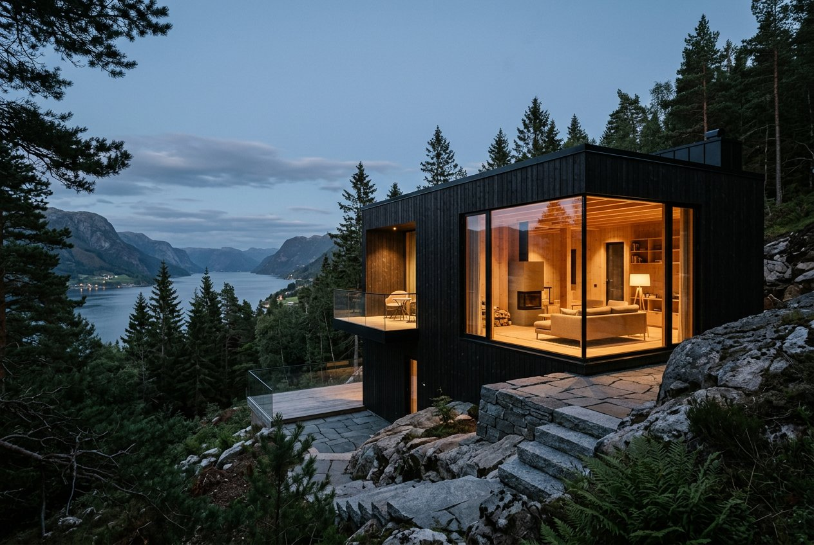

01Undersøkelse
Vi leser stedet, før vi tegner én linje
Reguleringsplan, grunnforhold, sol- og skyggeforhold, utsikt, støy, vegetasjon og nabolagets historie. Fasen avsluttes med en stedsanalyse og et «program» — en tydelig beskrivelse av hva huset skal løse, som du og vi er enige om.
- 01Tinglyste forhold, byggegrenser og regulering gjennomgått.Oversikt
- 02Dokumentasjon av stedet: lys, lyd, utsikt, grunn.Analyse
- 03Romprogram og budsjettavklaring før skissefase.Avtale

Skogstomt, BærumDokumentasjonsfoto / drone